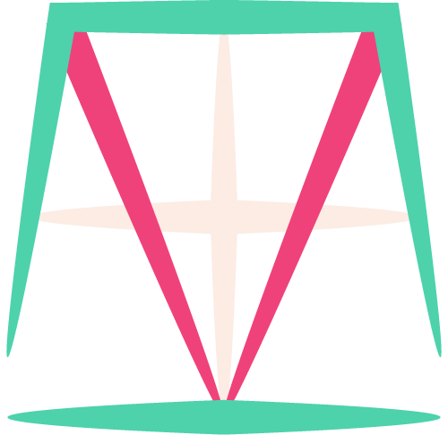

Starting A Startup
Blog Series
The tale of a startup is an exciting tale to tell. In this blog series we will post bi-weekly the story of our company, Meta Inc. In this series of blogs, we will outline our failings, our successes, and give readers the chance to see what starting a business is like. We call the blog series, Starting A Startup, and we hope that it is entertaining and fun, informative and interesting. We write so others can read, we blog so others can see, and we describe because it is fun to write, welcome to our blog, if you wish to comment Tweet us at @meta_inc_co, enjoy your time.
1: Founding An Idea
When you start something, you describe it, you give it character and personality, you give it something other people can recognize it by, you give it a name, its own persona in words.
